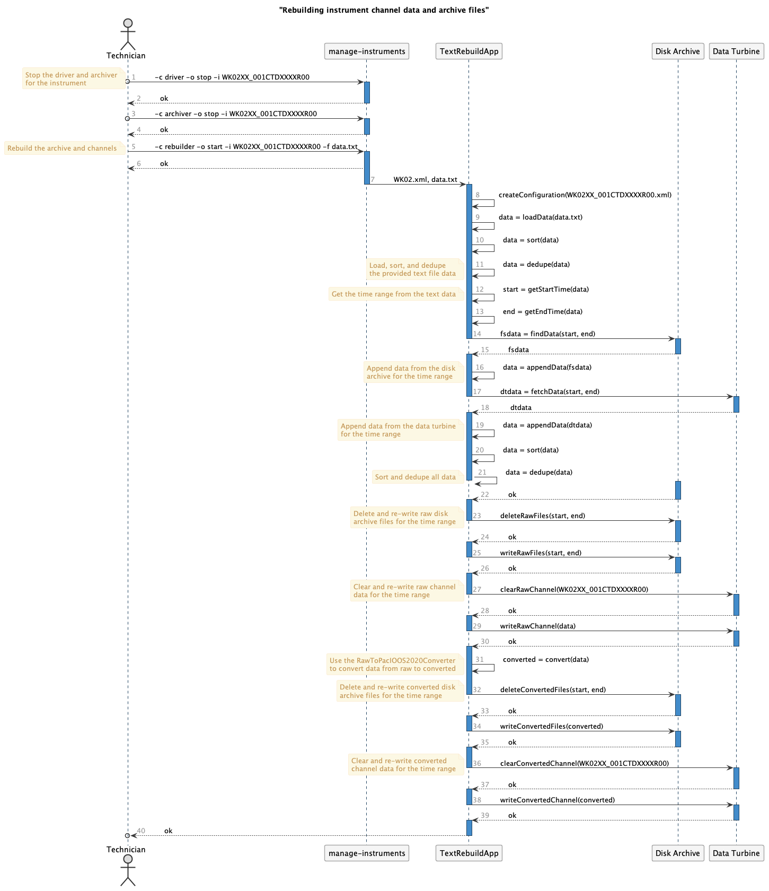

2. Rebuilding instrument channel and archive data¶
We periodically need to recreate channel data and archive files due to gaps in the data caused by network communication drops, stopped drivers, server maintenance, etc. This is enabled using the manage-instruments script with a rebuilder command. This document outlines the workflow based on that command.
2.1. Rebuild Sequence Diagram¶
The technician downloads data from an instrument flash card and saves it as a text file on realtime.pacioos.hawaii.edu. They then use the manage-instruments script to stop the instrument driver and archiver so there’s no activity for the Data Turbine channel and the disk archive directory for the given instrument.
Once the realtime data and archiving is paused, the technician uses the manage-instruments script to rebuild the archive by providing the instrument identifier and the text file of the downloaded data. The script will spin up a TextRebuildApp that parses the instrument configuration file, loads the raw text data, sorts it based on the data timestamps, and deduplicates any repeat sample lines. Once complete, it gets the earliest and latest timestamps in the text file to establish the range of dates that need to be rebuilt in the disk archive and in the Data Turbine.
It then finds the files in the disk raw archive directory within that time range, and appends the archived data to the already loaded raw data. Likewise, it fetches the raw data for the given time range from the Data Turbine and appends it as well.
With all possible sources of raw data, the TextRebuildApp then sorts and and de-duplicates the data again, creating a rebuilt raw product. This is then written to the raw disk archive after deleting existing files in the time range. It then clears the Data Turbine raw channel, and repopulates that channel with the rebuilt data.
After the raw files data are rebuilt, the TextRebuildApp uses the RawToPacIOOS2020Coverter to convert the data to the new format. It then deletes the converted disk archive files for the time range, and re-populates the converted Data Turbine channel for the instrument.